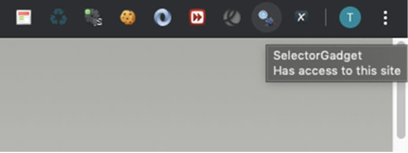

Chapter 4 網頁資料擷取
The world’s most valuable resource is no longer oil, but data.
The Economist
獲取資料（Getting Data）在資料科學專案中扮演攻擊發起點，如果這個專案目的是協助我們制定資料驅動的策略（data-driven strategy），而非傳統倚賴直覺的「根據經驗」策略，那麼為專案細心盤點資料來源與整理獲取方法，將可以為決策奠基穩固的基礎。常見的資料來源可以分為三種： 1. 檔案。 2. 資料庫。 3. 網頁資料擷取。
在資料輸入與輸出我們討論了如何透過 R 語言載入表格式檔案（包含 CSV 資料、Excel 試算表）、非表格式檔案（包含 TXT 資料、JSON 資料）；在向資料庫查詢我們簡介如何以 R 語言透過 DBI 與 RSQLite 兩個套件連結本機端的 SQLite 資料庫，並利用 DBI 套件所提供的函數實踐四種常見資料庫表格操作，即所謂的 CRUD：Create、Read、Update 與 Delete。這個小節我們要討論第三種資料來源：網頁，而從網頁擷取資料的技巧，有著另外一個更為眾人耳熟能詳的名稱：網站爬蟲。
4.1 網站爬蟲的核心任務
網站爬蟲的核心任務可以簡單區分為兩個：請求資料（requesting data）與解析資料（parsing data）；其中請求資料的運作就像我們在瀏覽器中輸入網址一般，只不過送出請求的管道由瀏覽器改變成為 R 語言程式碼；解析資料的運作則是將伺服器回傳的資料內容去蕪存菁，萃取必要的一小部分。
接著我們可依照解析資料的複雜程度將任務再細分為三類：JSON（全名為 JavaScript Object Notation，一種輕量級的資料交換格式）、XML（全名為 Extensible Markup Language）與 HTML（全名為 HyperText Markup Language）。很多的 Web API（全名為 Web Application Programming Interface，意即建構於網站伺服器的應用程式介面，作為不同系統之間的資料傳遞管道）其資料格式皆約定為 JSON 與 XML。如果資料格式是 JSON 在請求資料之後會以 R 語言的 list 或 data.frame 結構儲存，幾乎沒有額外的解析需求；假使資料格式是標記語言（XML 或 HTML），則會需要繼續以 XPath（提供在 XML/HTML 資料中以 XML 節點找尋特定資料位置的定位方法）或 CSS Selector（提供在 HTML 資料中以層疊樣式表找尋特定資料位置的定位方法）來解析。
4.2 安裝與載入套件
在這個小節中我們主要應用作為網頁資料擷取的套件是 jsonlite、xml2、magrittr 與 rvest，其中 magrittr 是為了使用 %>% 搭配 rvest 中的函數、xml2 是 rvest 的依賴套件，因此安裝時只需指定 jsonlite、rvest 與 magrittr 即可。
我們可以選擇透過命令列（Console）以 install.packages() 函數進行安裝。
或是透過圖形化介面（Graphic User Interface, GUI）的方法安裝，在右下角的 packages 頁籤點選 install，再輸入套件名稱接著點選安裝。

透過圖形化介面安裝
我們可以選擇透過命令列（Console）以 library() 函數將套件載入環境來使用。
## Loading required package: xml2或是透過圖形化介面（Graphic User Interface, GUI）在右下角的 packages頁籤下搜尋然後將前面的核取方框打勾。
4.3 擷取 JSON 格式資料
接著我們以 jsonlite 套件中的 fromJSON() 函數示範擷取政府資料開放平台：空氣品質指標（AQI）所提供的 Web API 將 JSON 格式資料載入 R 語言中，由於該 Web API 提供的是 Array of JSON，因此擷取之後的資料結構是 data.frame。
# 安裝 jsonlite、rvest 與 magrittr
#pkgs <- c("jsonlite", "rvest", "magrittr")
#install.packages(pkgs)
# 載入 jsonlite
library(jsonlite)
aqi_url <- "https://opendata.epa.gov.tw/ws/Data/AQI/?$format=json"
aqi <- fromJSON(aqi_url)
class(aqi)## [1] "data.frame"## SiteName County AQI Pollutant Status SO2 CO CO_8hr O3 O3_8hr
## 1 屏東(枋寮) 屏東縣 115 細懸浮微粒 對敏感族群不健康 0.5 0.31 0.3 31.2 51
## 2 新竹(北區) 新竹市 90 細懸浮微粒 普通 1 0.63 0.6 7.6 25
## 3 新北(樹林) 新北市 52 細懸浮微粒 普通 0.5 0.45 0.4 27.5 31
## 4 臺南(北門) 臺南市 118 細懸浮微粒 對敏感族群不健康 0.5 0.43 0.4 33.7 37
## 5 屏東(琉球) 屏東縣 97 臭氧八小時 普通 0.5 0.24 0.4 45.5 69
## 6 臺南(麻豆) 臺南市 152 細懸浮微粒 對所有族群不健康 0.5 0.46 0.5 37.9 47
## PM10 PM2.5 NO2 NOx NO WindSpeed WindDirec PublishTime PM2.5_AVG
## 1 45 27 18.6 19.5 0.8 0.5 33 2021/02/07 22:00:00 41
## 2 52 33 27.2 29.4 2.2 0.3 353 2021/02/07 22:00:00 32
## 3 - 16 16.8 20.7 3.9 0.5 138 2021/02/07 22:00:00 16
## 4 70 47 10.8 11 0.3 0.9 38 2021/02/07 22:00:00 42
## 5 28 15 0.3 1 0.7 0.3 176 2021/02/07 22:00:00 31
## 6 81 60 10.2 11.2 1 1.1 352 2021/02/07 22:00:00 57
## PM10_AVG SO2_AVG Longitude Latitude SiteId
## 1 72 1 120.59116667 22.37094722 313
## 2 49 1 120.96231389 24.81953333 312
## 3 - 1 121.38352778 24.94902778 311
## 4 68 1 120.12444444 23.26472222 310
## 5 51 2 120.37722 22.35222 204
## 6 82 1 120.24583056 23.17904722 203同樣以 jsonlite 套件中的 fromJSON() 函數示範擷取 data.nba.net 所提供的 Web API 將 JSON 格式資料載入 R 語言中，這時由於該 Web API 提供的是 JSON，擷取之後的資料結構則會是 list。
# 安裝 jsonlite、rvest 與 magrittr
#pkgs <- c("jsonlite", "rvest", "magrittr")
#install.packages(pkgs)
# 載入 jsonlite
library(jsonlite)
nba_url <- "https://data.nba.net/prod/v1/2020/players.json"
nba_players <- fromJSON(nba_url)
class(nba_players)## [1] "list"## [1] "Precious Achiuwa" "Jaylen Adams"
## [3] "Steven Adams" "Bam Adebayo"
## [5] "LaMarcus Aldridge" "Ty-Shon Alexander"
## [7] "Nickeil Alexander-Walker" "Grayson Allen"
## [9] "Jarrett Allen" "Al-Farouq Aminu"4.4 擷取 XML 格式資料
接著我們利用 xml2 套件示範擷取政府資料開放平台：空氣品質指標（AQI）所提供的 Web API 將 XML 格式資料載入 R 語言中，使用 read_xml() 函數之後獲得的資料結構是命名為 xml_document 的 list，面對 xml_document 可以呼叫 xml2 套件提供的 xml_find_all() 與 xml_text() 函數指定 XPath 並解析出文字格式的資料。
# 安裝 jsonlite、rvest 與 magrittr
#pkgs <- c("jsonlite", "rvest", "magrittr")
#install.packages(pkgs)
# 載入 xml2, magrittr
library(xml2)
library(magrittr)
aqi_url <- "https://opendata.epa.gov.tw/ws/Data/AQI/?$format=xml"
aqi <- read_xml(aqi_url)
class(aqi)## [1] "xml_document" "xml_node"## [1] "character"## [1] "屏東(枋寮)" "新竹(北區)" "新北(樹林)" "臺南(北門)" "屏東(琉球)"
## [6] "臺南(麻豆)" "彰化(大城)" "彰化(員林)" "富貴角" "麥寮"
## [11] "關山" "馬公" "金門" "馬祖" "埔里"
## [16] "復興" "永和" "竹山" "中壢" "三重"
## [21] "冬山" "宜蘭" "陽明" "花蓮" "臺東"
## [26] "恆春" "潮州" "屏東" "小港" "前鎮"
## [31] "前金" "左營" "楠梓" "林園" "大寮"
## [36] "鳳山" "仁武" "橋頭" "美濃" "臺南"
## [41] "安南" "善化" "新營" "嘉義" "臺西"
## [46] "朴子" "新港" "崙背" "斗六" "南投"
## [51] "二林" "線西" "彰化" "西屯" "忠明"
## [56] "大里" "沙鹿" "豐原" "三義" "苗栗"
## [61] "頭份" "新竹" "竹東" "湖口" "龍潭"
## [66] "平鎮" "觀音" "大園" "桃園" "大同"
## [71] "松山" "古亭" "萬華" "中山" "士林"
## [76] "淡水" "林口" "菜寮" "新莊" "板橋"
## [81] "土城" "新店" "萬里" "汐止" "基隆"4.5 擷取 HTML 格式資料
向伺服器發送請求後若是獲得 HTML 格式資料，將需要進行較複雜的解析任務，原因是請求後的 HTML 文件包含了太多不需要的資訊，諸如包含在 <style></style> 標籤中的 CSS（Cascading Style Sheets，階層樣式表）語言或者包含在 <script></script> 標籤中的 JavaScript 語言。
所以熟練定位網頁中特定資料位址的技巧就變得十分重要，如同在地圖上加入標記（Marker）一般，我們需要景點或建築物的位址，可以是門牌號碼、詳細地址甚至是精準的經緯度。在網頁上標記資料為止有非常多方法能夠表示，常見的像是使用：
- HTML 的標籤名稱。
- HTML 標籤中給予的 id。
- HTML 標籤中給予的 class。
- CSS 選擇器（CSS Selector）。
- XPath。
考量多數資料科學愛好者並不具備網頁工程師的背景技能，透過 Chrome 瀏覽器的外掛來取得資料所在的 CSS 選擇器或者 XPath 是快速入門的捷徑。
4.6 Chrome 瀏覽器外掛：Selector Gadget
透過下列步驟將 Selector Gadget 外掛加入 Chrome 瀏覽器。
- 前往 Chrome Web Store，點選外掛（Extensions）。
- 搜尋 Selector Gadget 並點選加入到 Chrome 瀏覽器。

- 確認要加入 Selector Gadget。

依照下列步驟定位 HTML 格式資料的 CSS 選擇器。
- 點選 Selector Gadget 的外掛圖示。

- 留意 Selector Gadget 的 CSS 選擇器。
移動滑鼠到想要定位的元素。
在想要定位的評分上面點選左鍵，留意此時的 CSS 選擇器位址與資料筆數，通常在第一次點擊後網頁上很多的資料都會同時被選到（以黃底標記），Clear 後面數字表示有多少筆。

- 移動滑鼠點選不要選擇的元素（改以紅底標記），並同時注意 CSS 選擇器位址與資料筆數的變動，當資料筆數與預期相符時表示完成定位。

我們以 IMDB.com 的 Avengers: Infinity War (2018) 頁面示範如何以 CSS 選擇器定位評等。
利用 rvest 套件的 read_html() 函數將 HTML 資料格式讀入，獲得的資料結構同樣是命名為 xml_document 的 list，面對 xml_document 可以呼叫 rvest 套件提供的 html_nodes() 與 html_text() 函數指定 CSS 選擇器解析出文字格式的資料。
# 安裝 jsonlite、rvest 與 magrittr
#pkgs <- c("jsonlite", "rvest", "magrittr")
#install.packages(pkgs)
# 載入 rvest, magrittr
library(rvest)
library(magrittr)
movie_url <- "https://www.imdb.com/title/tt4154756"
movie <- read_html(movie_url)
class(movie)## [1] "xml_document" "xml_node"## [1] 8.44.7 Chrome 瀏覽器外掛：XPath Helper
透過下列步驟將 XPath Helper 外掛加入 Chrome 瀏覽器。
- 前往 Chrome Web Store，點選外掛（Extensions）。
- 搜尋 XPath Helper 並點選加入到 Chrome 瀏覽器。
- 確認要加入 XPath Helper。
依照下列步驟定位 HTML 格式資料的 XPath。
- 點選 XPath Helper 的外掛圖示。

- 留意 XPath Helper 介面左邊的 XPath 與右邊被定位到的資料。
- 按住 shift 鍵移動滑鼠到想要定位的資料。
- 試著縮減 XPath，從最前面的節點開始刪減，在最短的 XPath 依然能對應到資料即表示完成定位。
我們以 IMDB.com 的 Avengers: Infinity War (2018) 頁面示範如何以 XPath 定位評等。
利用 rvest 套件的 read_html() 函數將 HTML 資料格式讀入，獲得的資料結構同樣是命名為 xml_document 的 list，面對 xml_document 可以呼叫 rvest 套件提供的 html_nodes() 與 html_text() 函數指定 XPath 解析出文字格式的資料。
# 安裝 jsonlite、rvest 與 magrittr
#pkgs <- c("jsonlite", "rvest", "magrittr")
#install.packages(pkgs)
# 載入 rvest, magrittr
library(rvest)
library(magrittr)
movie_url <- "https://www.imdb.com/title/tt4154756"
movie <- read_html(movie_url)
class(movie)## [1] "xml_document" "xml_node"## [1] 8.44.8 小結
在 Chapter 4 中我們簡介如何以 R 語言透過 jsonlite 、 xml2 與 rvest 等套件實踐網站爬蟲的核心任務：請求資料（requesting data）與解析資料（parsing data）。面對不同類型的網頁資料，分別以 jsonlite 套件的 fromJSON() 函數處理 Web API 的 JSON 格式資料；以 xml2 套件的 read_xml() 、 xml_find_all() 與 xml_text() 函數處理 Web API 的 XML 格式資料；以 rvest 套件的 read_html()、html_nodes() 與 html_text() 函數搭配 Chrome 瀏覽器外掛 Selector Gadget 以及 XPath Helper 處理 HTML 格式資料。